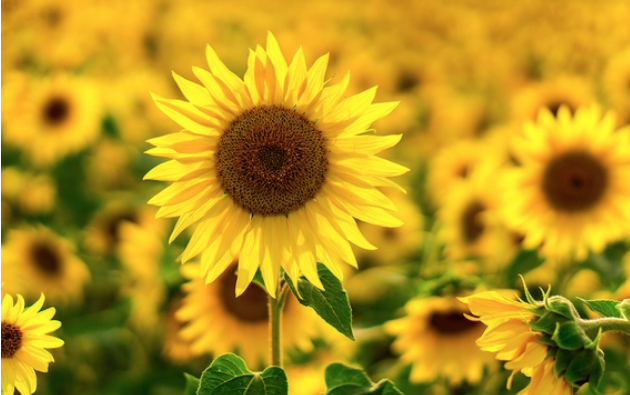
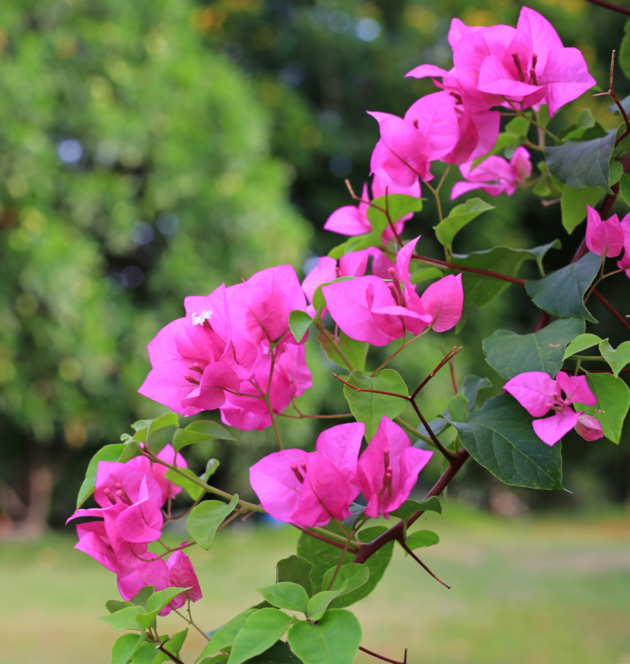
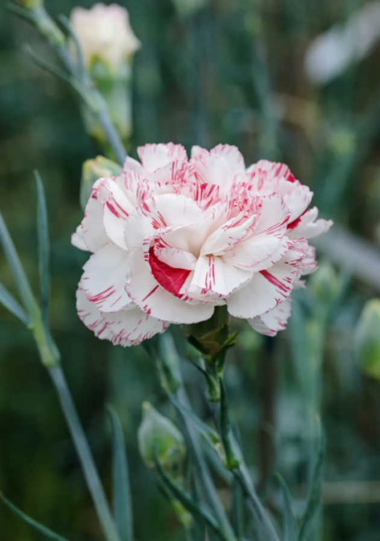

Sunflowers
Radiant and tall, they capture the essence of happiness, loyalty, longevity, and adoration.
Use a tall vase with cool water and flower food. Trim stems at an angle, remove underwater leaves, and keep in indirect light.

Bougainvillea
A resilient climber that mirrors beauty and passion while offering a sense of protection.
Treat cut stems with fresh water; if planting, use well-draining soil and provide full sun.

Carnation
Timeless petals that express deep love and devotion, as well as passion and distinction.
Place in a clean vase with fresh water. Keep in a cool spot away from fruit or sun, recutting stems and changing water every 2–3 days.